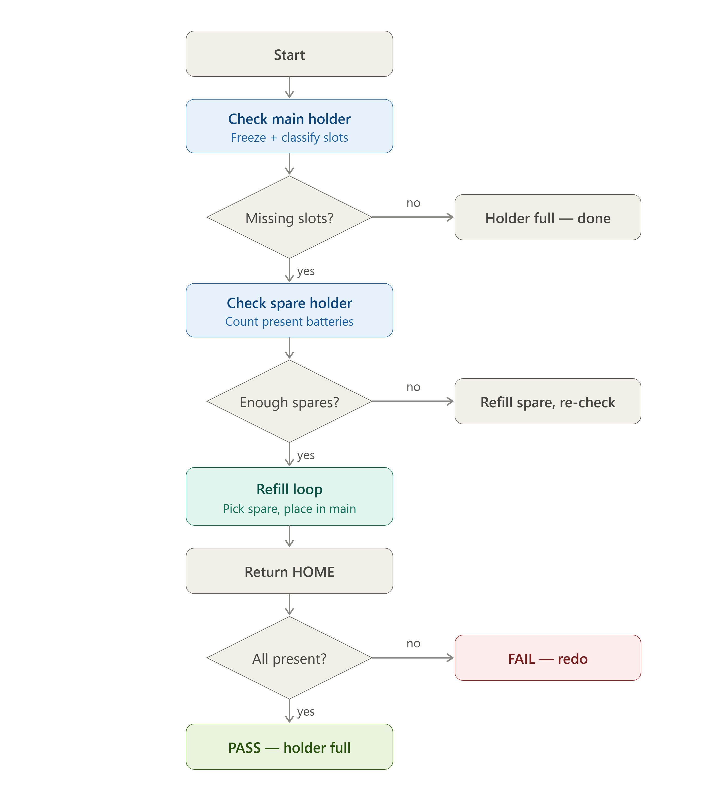
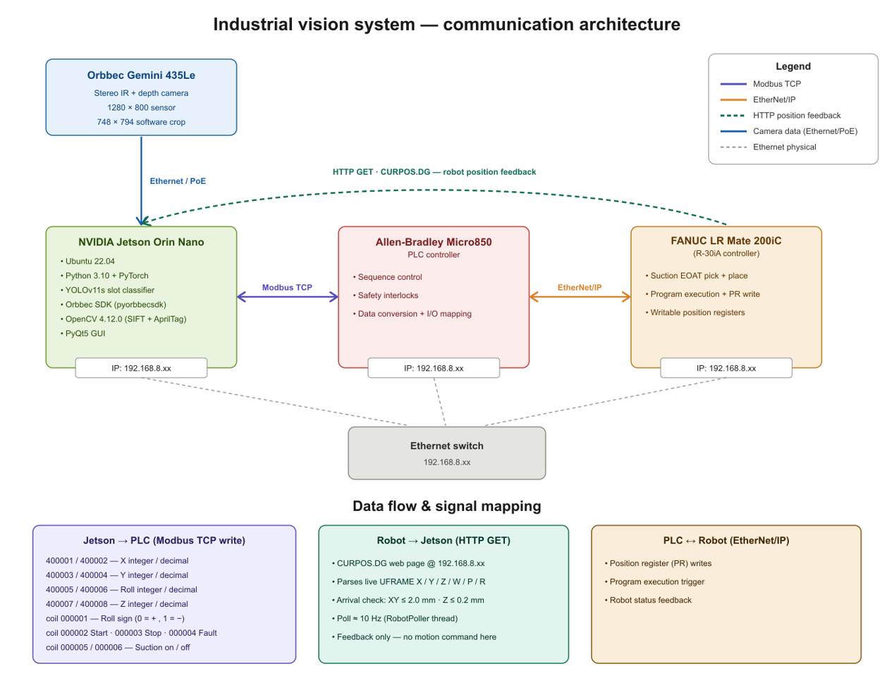

00 The problem
Modern battery packs hold thousands of cylindrical cells, and teaching each cell position by hand on an industrial robot doesn't scale — any change to the pack or fixture means re-teaching the entire set. Vision guidance solves this, but commercial systems like FANUC iRVision are closed: their calibration, detection, and coordinate-conversion stages are hidden from the user, which makes it hard to plug in custom deep-learning models like YOLO. I wanted a pipeline where every stage, from raw image to robot coordinate, is exposed and modifiable.
01 System
At the center is an NVIDIA Jetson Orin Nano Super, which runs the entire operation — camera streaming, YOLOv11 inference, the full camera-to-robot coordinate transformation, the operator interface, and all communication with the rest of the cell. Rather than a controller sequencing the robot, the Jetson is the brain: every decision about what the robot does next originates on the host.

A per-hole classifier resolves each known slot as present, absent, or flipped, and the cell autonomously restocks empty slots via vacuum pick-and-place from a spare holder, in both operator-guided and fully autonomous modes.
02 Perception on the edge
An AprilTag affixed to the holder fixes the geometry of a rigid eight-hole overlay from CAD, and a YOLOv11n-cls classifier runs on 96×96 grayscale crops — one per hole — directly on the Jetson. Because the overlay isolates each hole as its own crop, a single captured image yields eight labeled samples, so the entire classifier was trained from just 28 images (224 crops) and reached 100% top-1 accuracy on the held-out set.
Anchoring hole identity to the AprilTag rather than to appearance means each slot keeps a fixed index that maps cleanly to its taught robot position — solving the unstable hole-numbering that an appearance-based detector couldn't guarantee from run to run.
03 Coordinate transformation
The Jetson runs a two-stage calibration — a 17-point homography fit at the part-height plane, plus a least-squares affine post-correction that absorbs residual error from a physically warped calibration grid — converting every pixel location into a robot user-frame coordinate before it ever leaves the host.
Vision-computed X / Y / Z / Roll targets then pass from the Jetson through the PLC into the FANUC via Group I/O, all driving a single position register. The robot runs one motion instruction while the Jetson continuously rewrites that register to retarget every pick and place — keeping teach-pendant code minimal and all path logic on the host side.
| Coordinate | Jetson reg | Modbus name | PLC out | Robot DI | Robot GI | TP register | Final PR |
|---|---|---|---|---|---|---|---|
| X integer | 400001 | X_Integer_R2 | O[1] | DI[121–136] | GI[1] | R[1] | — |
| X decimal | 400002 | X_Decimal_R2 | O[2] | DI[137–152] | GI[2] | R[2] (÷1000) | — |
| X total | — | — | — | — | — | R[5:AN]=R[1]+R[2] | PR[71,1] |
| Y integer | 400003 | Y_Integer_R2 | O[3] | DI[153–168] | GI[3] | R[3] | — |
| Y decimal | 400004 | Y_Decimal_R2 | O[4] | DI[169–184] | GI[4] | R[4] (÷1000) | — |
| Y total | — | — | — | — | — | R[6]=R[3]+R[4] | PR[71,2] |
| Roll integer | 400005 | Roll_R2_Integer | O[5] | DI[185–200] | GI[5] | R[7] | — |
| Roll decimal | 400006 | Roll_R2_Decimal | O[6] | DI[201–216] | GI[6] | R[8] (÷1000) | — |
| Roll total | — | — | — | — | — | R[9]=R[7]+R[10] | PR[71,6] |
| Z integer | 400007 | Z_Integer_R2 | O[7] | DI[217–232] | GI[7] | R[11:Zint] | — |
| Z decimal | 400008 | Z_Decimal_R2 | O[8] | DI[233–249] | GI[8] | R[12:Zdec] (÷1000) | — |
| Z total | — | — | — | — | — | R[13:Ztotal] | PR[71,3] |
| Roll sign | coil 000001 | Roll_Sign | — | DI[265] | — | sign logic (LBL[4]) | applied to R[9] |
Coordinate mapping across the Jetson, Micro850 PLC, and FANUC R-30iA controller.
Each move is gated on real position feedback: the Jetson polls the robot's live pose over HTTP (CURPOS.DG) at ~10 Hz and blocks until confirmed arrival, keeping vision, PLC, and robot in lockstep.

04 Results
The system achieved 0.93 mm aggregate RMS positioning accuracy across eight validation runs — comfortably inside the holder's 2.4 mm placement tolerance, where a tapered lead-in guides each battery into its hole. Benchmarked against two FANUC iRVision configurations on the same task (fixed-mounted 200iC at 0.904 mm, robot-mounted 200iD at 0.756 mm), the custom pipeline delivered comparable accuracy — despite using only a 17-point homography, no full perspective camera model, and no sub-pixel refinement.
05 Why it matters
Because the full perception-to-motion chain is custom-built and fully modifiable rather than locked inside a closed vendor stack, it establishes a calibrated, sub-millimeter foundation for integrating LLM/VLM planners into industrial manipulation. The longer-term goal is scalable cylindrical-cell pack assembly across formats such as 18650, 21700, and 4680. A planned sensor-optics upgrade projects a positioning floor approaching the robot's own ±0.02 mm mechanical repeatability.